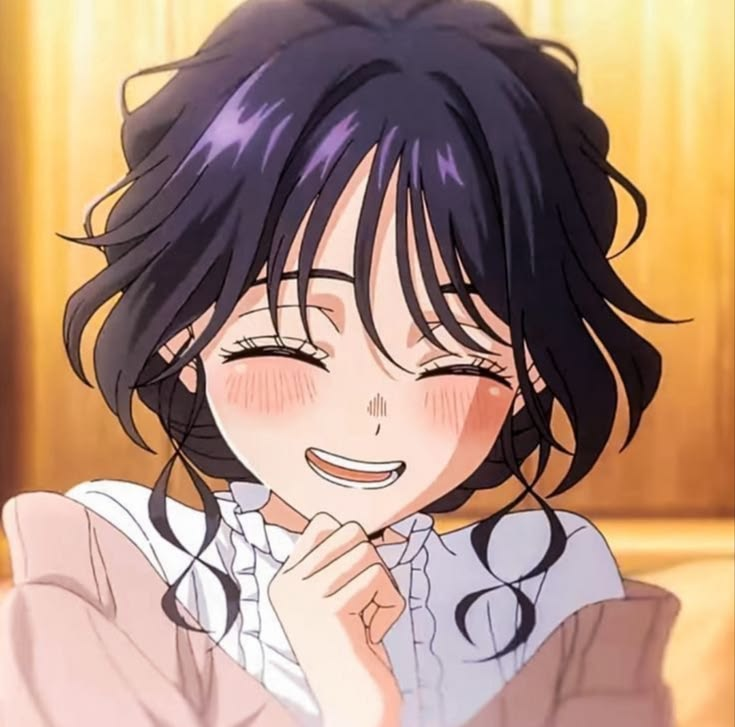
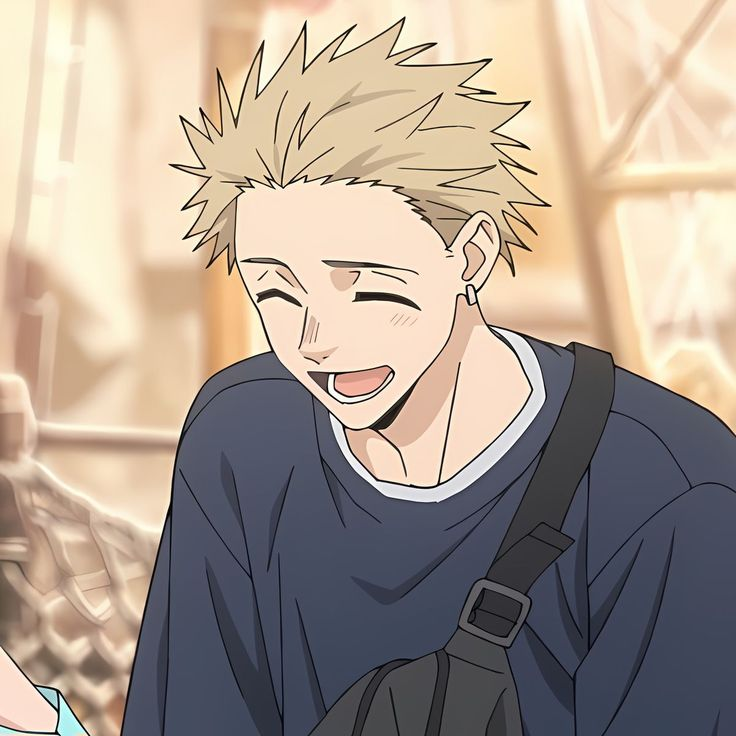

🌷 Kaoruko Waguri
Dulce, tierna y especial. Su sonrisa puede iluminar hasta el día más gris. 💗
Una historia de amor, ternura y flores bonitas ♡
Un rinconcito inspirado en una historia que nos recuerda que las apariencias no definen a las personas y que el amor puede florecer de las formas más bonitas.
Aquí viven las flores, los pequeños detalles y los sentimientos que hacen especial esta historia. 🌸

Dulce, tierna y especial. Su sonrisa puede iluminar hasta el día más gris. 💗

Un chico de buen corazón que demuestra que la verdadera belleza está en lo que llevamos dentro. ♡
A veces, las historias más bonitas comienzan cuando dos personas se atreven a conocerse de verdad.
Como las flores en primavera, los sentimientos también necesitan tiempo, cariño y paciencia para crecer. 🌷